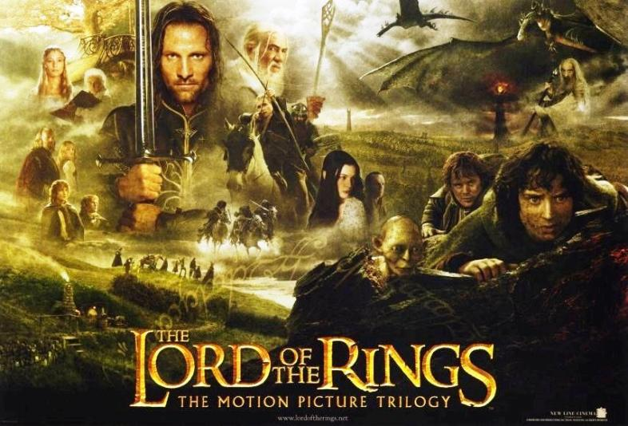

The Lord of the Rings is a film series of three epic fantasy adventure films directed by Peter Jackson, based on the eponymous novel written by J. R. R. Tolkien. The films are subtitled The Fellowship of the Ring (2001), The Two Towers (2002) and The Return of the King (2003). Produced and distributed by New Line Cinema with the co-production of WingNut Films. It is an international venture between New Zealand and the United States. The films feature an ensemble cast including Elijah Wood, Ian McKellen, Liv Tyler, Viggo Mortensen, Sean Astin, Cate Blanchett, John Rhys-Davies, Christopher Lee, Billy Boyd, Dominic Monaghan, Orlando Bloom, Hugo Weaving, Andy Serkis and Sean Bean.
Set in the fictional world of Middle-earth, the films follow the hobbit Frodo Baggins as he and the Fellowship embark on a quest to destroy the One Ring, to ensure the destruction of its maker, the Dark Lord Sauron. The Fellowship eventually splits up and Frodo continues the quest with his loyal companion Sam and the treacherous Gollum. Meanwhile, Aragorn, heir in exile to the throne of Gondor, along with Legolas, Gimli, Merry, Pippin and the wizard Gandalf, unite to rally the Free Peoples of Middle-earth in the War of the Ring in order to aid Frodo by weakening Sauron's forces.
The three films were shot simultaneously and entirely in Jackson's native New Zealand from 11 October 1999 until 22 December 2000, with pickup shots done from 2001 to 2004. It was one of the biggest and most ambitious film projects ever undertaken, with a budget of $281 million. An extended edition of each film was released on home video a year after its theatrical release.
The Lord of the Rings is widely regarded as one of the greatest and most influential film trilogies ever made. It was a major financial success and is among the highest-grossing film series of all time with over $2.9 billion in worldwide receipts. Each film was critically acclaimed and heavily awarded, winning 17 out of their 30 Academy Award nominations.